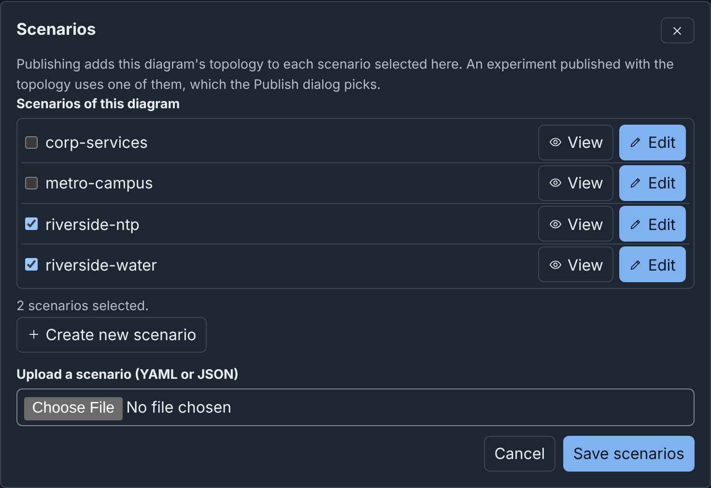
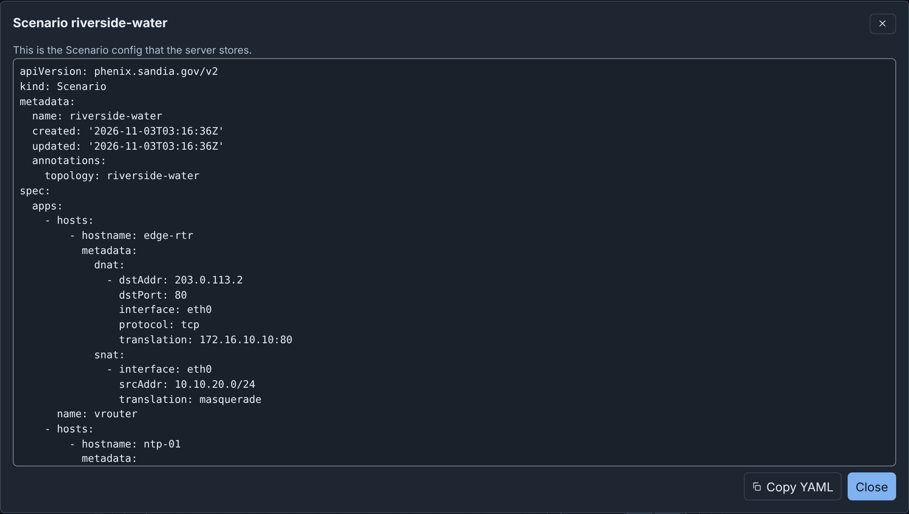
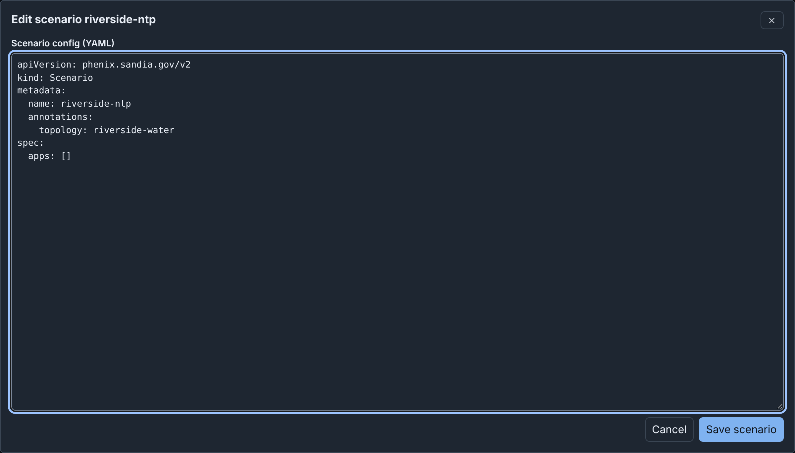

Scenarios and Included Topologies: details¶
Info
This page holds every rule, limit and message of this feature. For the short guide, see Diagrams.
Scenarios¶
A diagram lists, by name, up to 20 Scenario configs that the diagram uses.
Publishing adds the topology to the topology annotation of each one. An
experiment published with the topology uses one of them (see
Scenarios).
To add the stored scenario riverside-water to a diagram, such as your quick start draft:
- Click Scenarios in the toolbar, or Add scenario in the Inspector with nothing selected.
- Under Scenarios of this diagram, select the checkbox of
riverside-water. - Click Save scenarios.

The list of scenarios¶
Scenarios of this diagram lists each scenario that your role can list on the server, sorted by name. A checkbox adds the scenario to the end of the diagram's list, or removes it. The scenario on the server does not change.
- A scenario that the diagram lists, and that the server does not list, shows "Not found on the server".
- With more than 8 scenarios, Filter scenarios filters the list by name. Enter in this field does not save the dialog.
- When the diagram lists 20 scenarios, the dialog says "A diagram lists at most 20 scenarios. To select another, clear one first."
Save scenarios writes the list into the diagram. Cancel does not change the list, but a scenario that you stored stays on the server.
Viewing and editing a scenario¶
Each scenario of the server has View and Edit:
- View opens the scenario as read-only YAML, with Copy YAML.
- Edit opens the scenario as YAML in a text field. Change the config, then click Save scenario. Builder replaces the stored scenario with the text, its annotations included. The name must stay the same: "The name must stay NAME. To store the scenario with a new name, select Create new scenario."


When the server refuses the config, the editor shows each problem that the server found and stays open. When you changed the text, Cancel asks "Discard your changes?".
Creating a scenario¶
Create new scenario opens the editor with a new Scenario config:
- Its name is the diagram's name made into a config name, then
-scenario, for exampleRiverside-Water-scenario. When the name is in use, Builder adds a number, such as-2. - Its
topologyannotation names the topology that the Publish dialog offers first. - It has no apps.
Change the config, then click Create scenario. Builder stores the scenario on the server and selects its checkbox. Click Save scenarios to keep the list in the diagram.
Uploading a scenario file¶
To add a scenario from a file, choose the file in Upload a scenario (YAML
or JSON). The file is a phenix.sandia.gov/v2 Scenario config of at most
5 MiB. The dialog proposes the file's metadata.name as Scenario name,
or else the file name made into a config name. Store and add stores the
file on the server as a Scenario config and selects its checkbox.
When the server has a scenario of that name, Builder asks "Replace scenario
NAME?" first. The scenario gets the file's spec. It keeps its own
annotations and adds those of the file. Its topology annotation keeps
every topology that it named and adds those of the file. Thus, experiments
of those topologies can still use it.
To store a new scenario, your role needs configs create. To replace
one, it needs configs get and update. When the server refuses, the
dialog shows the server's message. A name that the list has in another
letter case shows one time, with the spelling of the stored scenario.
In a published diagram, the dialog only lists the scenarios, each with View, and has Close.
Included topologies¶
riverside-water includes the topology corp-services, so dns-01 and ntp-01 are in the diagram:
- They have a dashed border and say "Included from corp-services".
- Their fields are read only (see Fields you cannot change), but you can move them.
- You cannot delete or connect them, or delete their connections. Builder says, for example, "Included topology corp-services defines dns-01. This device is read only here. Change it in corp-services."
- You cannot rename or remove their network (CORP). Its other fields can change.
- The checks give them no warnings, but check this diagram's devices against them.
To change dns-01, change the topology corp-services, then import riverside-water again (see Importing a topology or experiment). Or make the included devices part of a new diagram. Publishing does not copy included devices (see Included topologies).
Making included devices editable¶
To change included devices in the diagram itself, make a copy of the diagram in which they are its own nodes:
- When you import the topology, choose Combine into one new topology under Included topologies.
- In an open draft, run Combine included nodes into a new draft from the command palette. Or select an included device and click Combine into a new draft in the Inspector.
The command makes a new draft and opens it. The draft that was open does not change. The new draft has the diagram's name with "-combined" at the end, for example Riverside-Water-combined. It gets a number when a topology or a draft of any user has that name.
In the new draft, the included devices are normal devices. You can change,
delete and connect them, and the checks include them. The draft has no
link to riverside-water, so publishing it makes a new topology. When the
diagram never had the nodes of an included topology, includeTopologies
still names it. Builder says so: "It still includes", the topology's name,
and "whose nodes are not in the diagram."